Two robot arms that build LEGO
and hold each other's work steady
How the system works, from a drawing to two finished structures, shown on the final run: arm A builds an arch from a drawing, arm B builds the S3 bridge from a brick list, and every brick is pushed onto studs that resist.
Three requirements, all met in the final run
The arch is a drawing; S3 is a brick list.
Order, grips, press points and supports are all generated.
Arch: 11 bricks, 1 support. S3: 16 bricks, 3 supports.
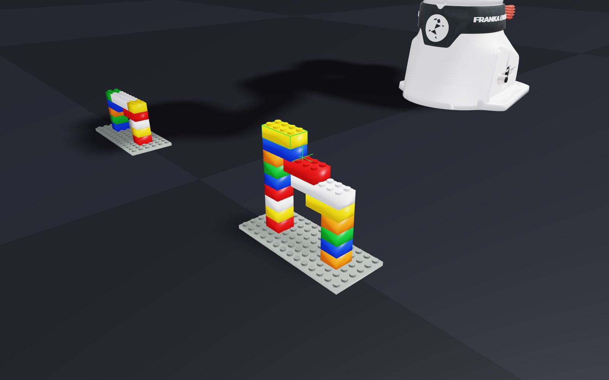
Run dual_arch_s3_studfit_007
A physics simulation of the work cell
- 2 × Franka FR3 arms, 0.9 m apart; A on the left, B on the right.
- Each arm has its own studded base plate and its own row of feeder bricks.
- Newton 1.2.1 + MuJoCo solver on the GPU: 60 frames per second, each split into 16 small steps.
- Every step: find what touches what, work out the forces, move every body.
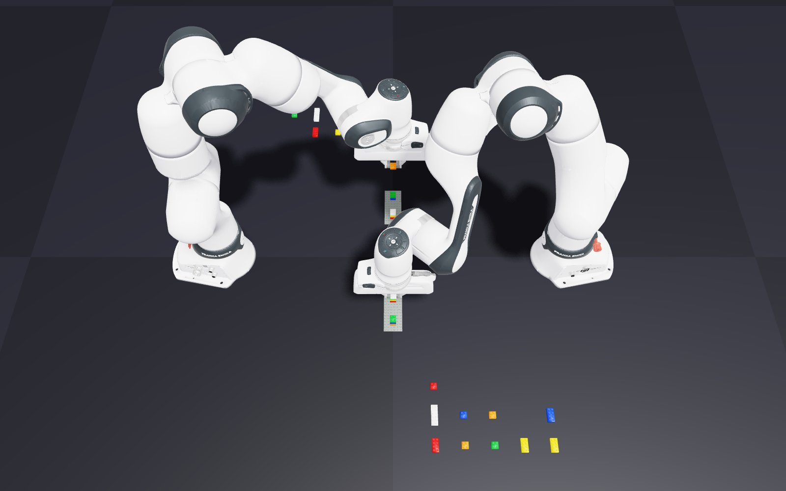
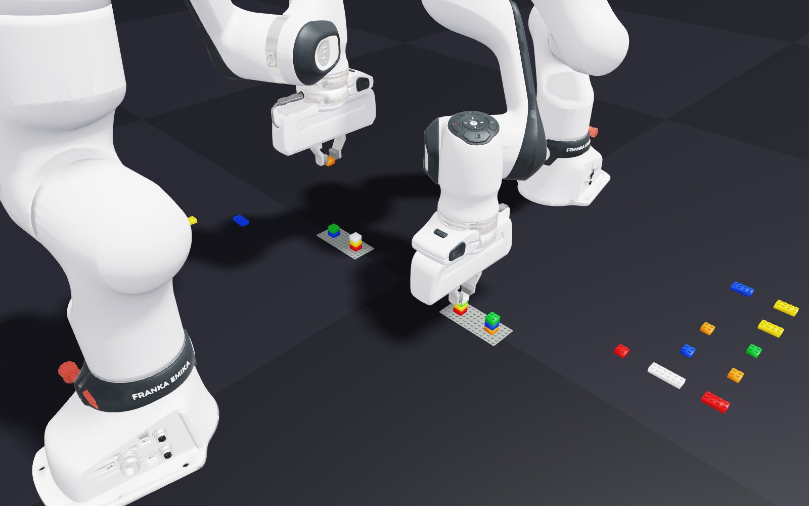
How a brick is modelled, and how it goes onto the studs
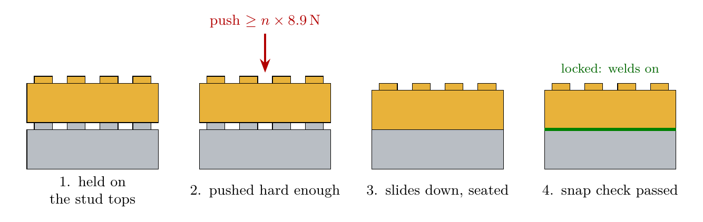
- Brick reaches the stud tops → held there
- Push reaches 8.9 N per stud (4 studs: 35.6 N; 8 studs: 71.2 N)
- Brick slides straight down and seats
- Snap check passes → locked in
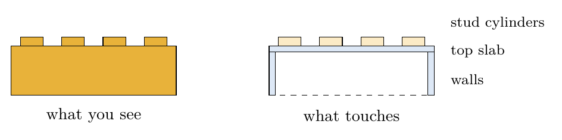
You see the full brick; contacts use simple hidden shapes: a top slab, four walls, one cylinder per stud. Fast and stable.
Locking bricks together, and breaking
Once a brick passes the snap check, invisible welds switch on between it and each brick it sits on. It then behaves like a clicked-in brick.
Every frame each weld's load becomes a utilisation u (load ÷ strength). If u ≥ 1 twice in a row, the weld is deleted and the run fails.
The planner predicts u with the same formula, so plan and physics agree on what "too much load" means.
The break check pauses until the helper lets go: welds report a short load spike as they lock on, and the holding hand is there to absorb it.
Carve with shadows, then tile with bricks
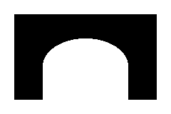
- Find the shape: threshold halfway between darkest and brightest; crop.
- Fit to the LEGO grid: 1 stud = 8.0 mm, 1 layer = 9.6 mm.
- Majority vote: a grid square is full if more than half is dark.
- Carve: keep a cube only if every view sees it ("visual hull").
- Tile each layer with bricks, bottom up, overhangs first.
- Number the bricks in build order.
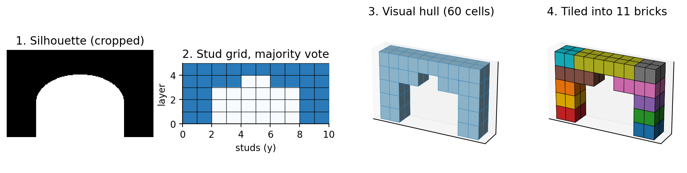
How each brick is chosen
Every brick that could cover the next cube is scored, in this order:
- rests on the most different bricks below (ties the arch's legs together)
- fewest joints on top of joints (like a brick wall)
- bigger bricks
- runs across the layer below
- closer to the centre
A brick with nothing below it → "overhangs too far", never an unbuildable blueprint.

One step per brick
Will pressing this brick break the structure?
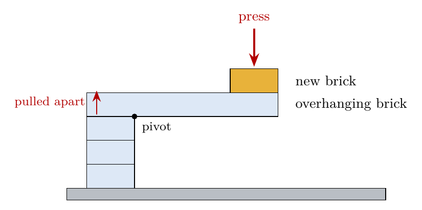
A press on an overhang acts like standing at the end of a diving board: it pulls the studs at the root apart. Studs hold 11.3 N each.
- Utilisation u = prying load ÷ what the studs can hold. u ≥ 1 breaks.
- A linear program balances forces and moments on every brick (weight, press, helper's grip) and finds the load sharing with the lowest worst u.
- Press = n × 8.9 N, checked with a 3 N sideways push in 4 directions.
- Needs help if u × 3 ≥ 1 (safety factor 3), or if the brick overhangs.
- Grip choice: must hold a brick on the press's load path (the column under it); among safe grips, the one nearest the press.
The final run's plans
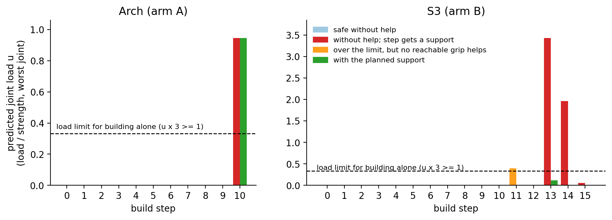
Red: gets a support. Green: with it. Orange: S3 step 11 is over the limit, but every reachable grip is on the other pier (off the load path), so it is built alone. Step 15 is supported because it overhangs.
The four supported steps
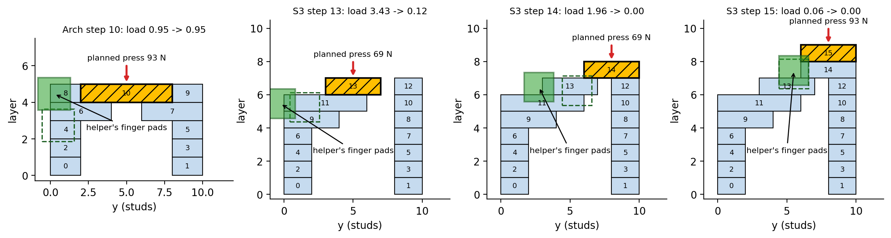
Hatched: the brick being pressed. Dashed: planned grip. Filled: the grip the helper actually used, a nearby alternative its search found. S3 13: 3.43 → 0.12; S3 14: 1.96 → 0.
Plan the big moves, script the small ones
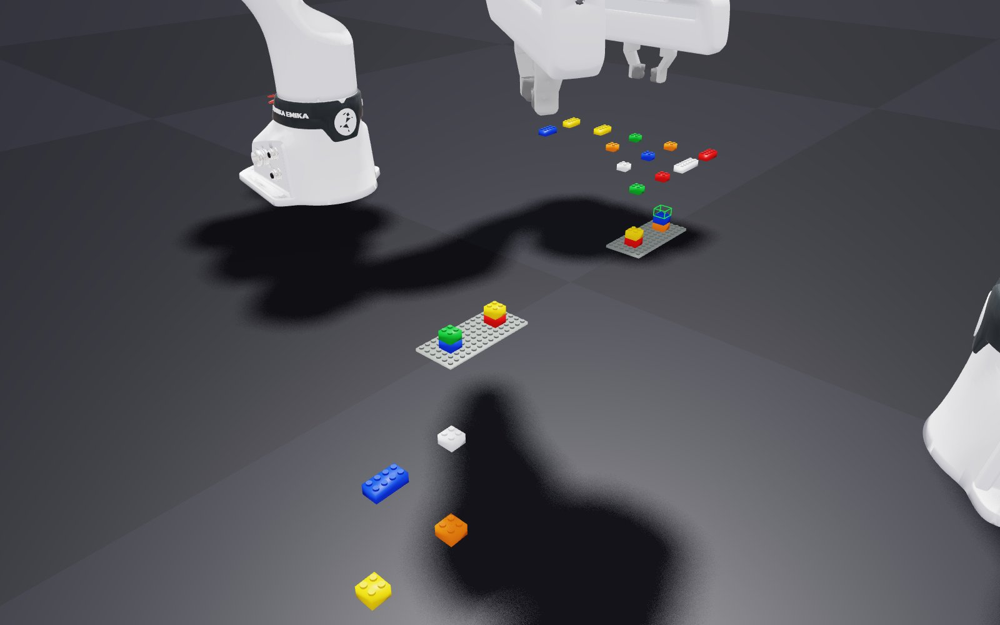
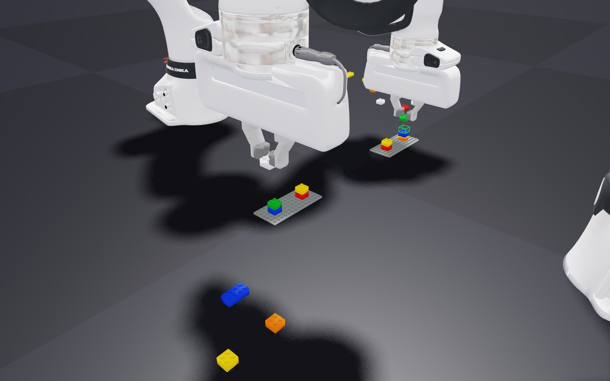
Pressing each brick onto the studs
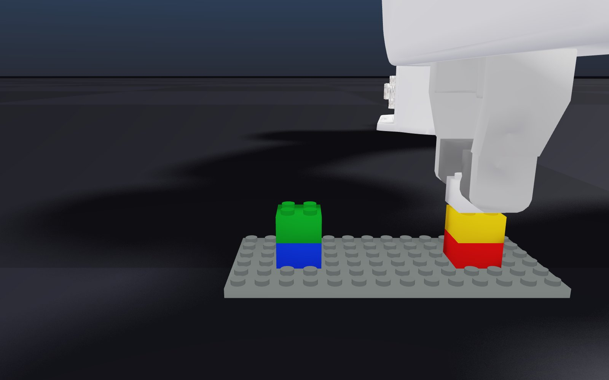
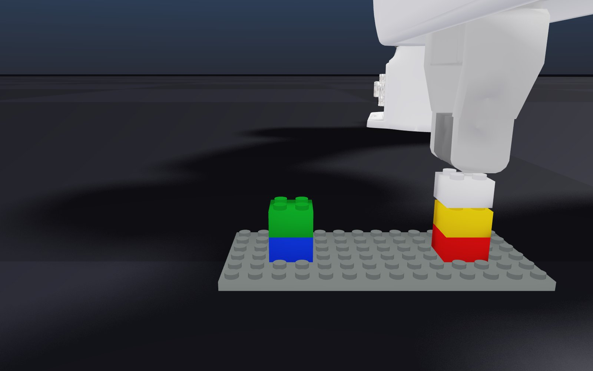
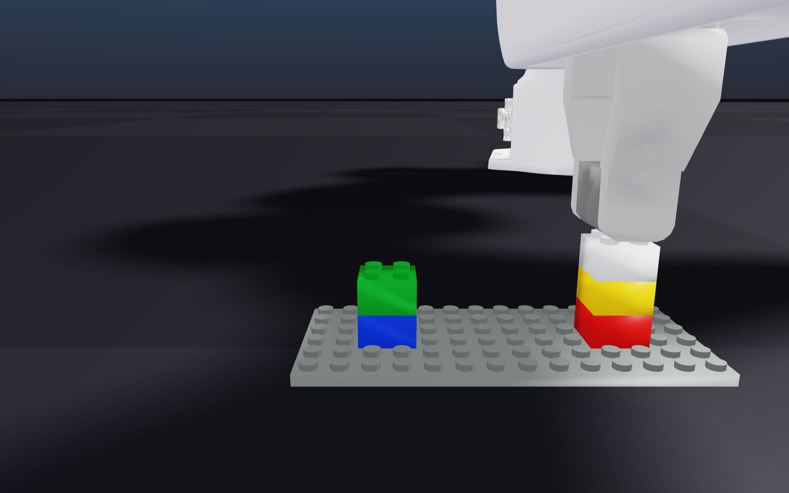
- The side grip is gentle (~1.5 N per finger) and would slip, so the arm presses from above with closed fingertips.
- Force ramps over 0.5 s to 1.3× what the studs need; joints 5× stiffer so the hand does not skid; snap check 0.25 s after it goes in.
The push on every brick
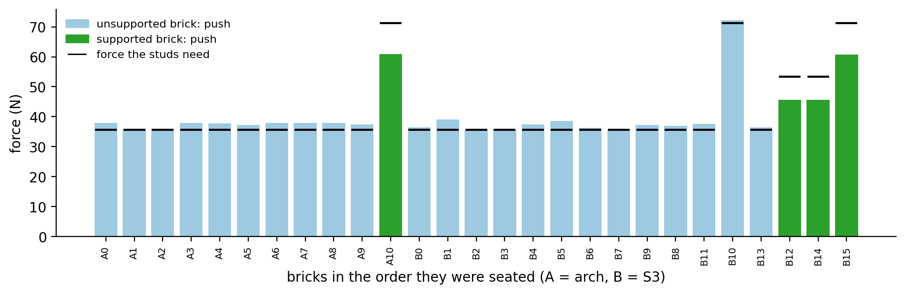
Holding the other arm's structure
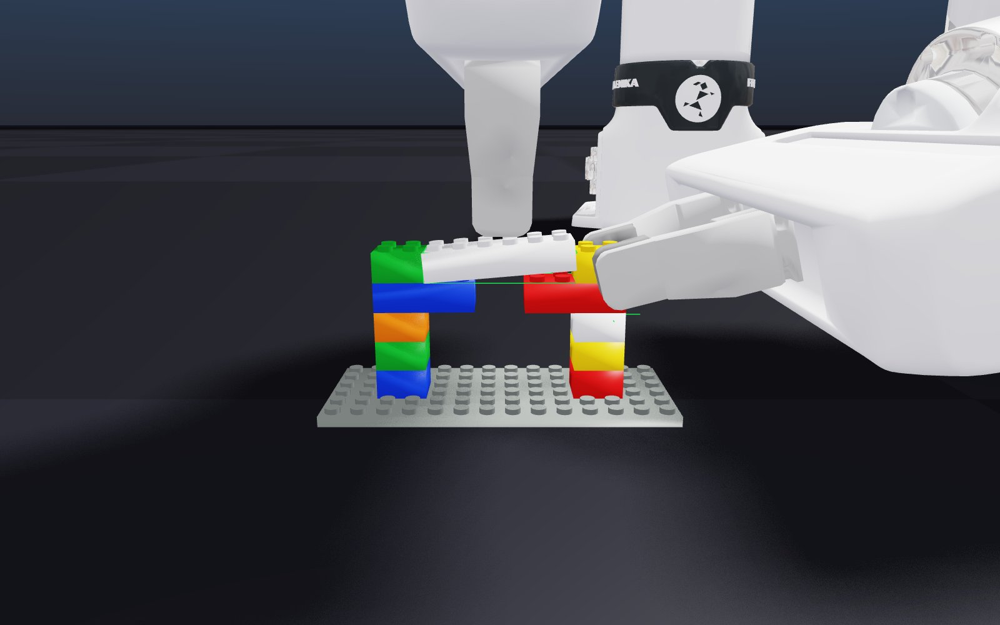
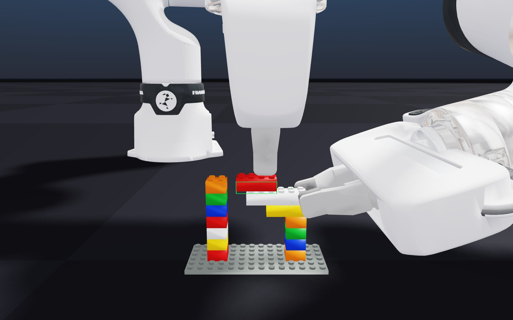
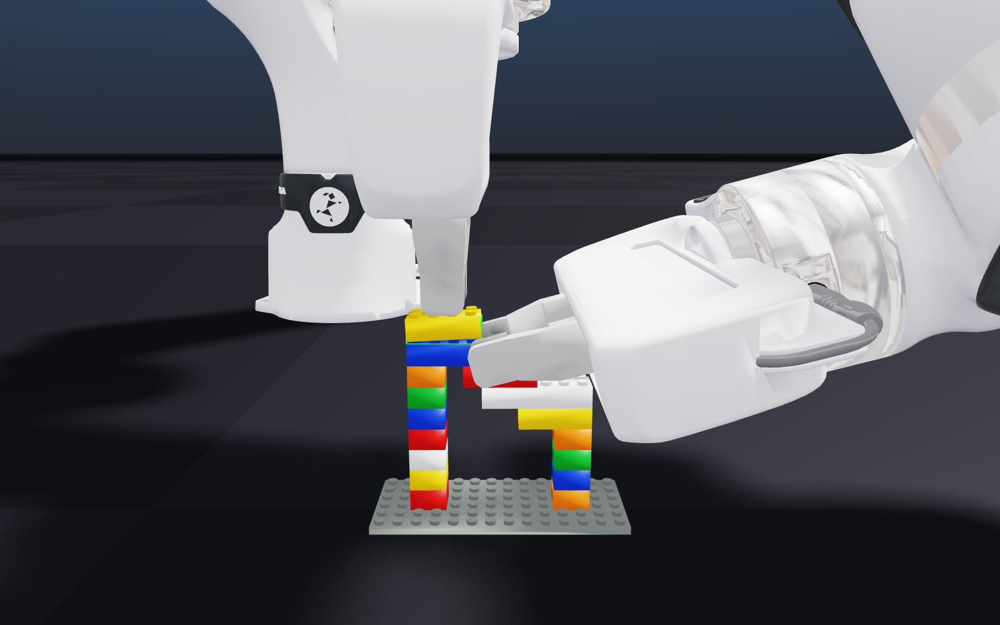
Spheres, boxes and five layers of protection
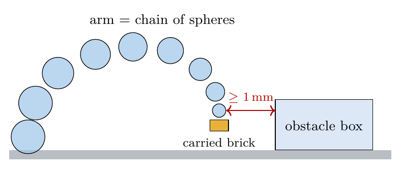
Sharing space, and working next to a helper
Each arm plans on its own. Before moving it books the space its spheres will sweep; a booking must stay ≥ 25 mm from the other arm's. Straight moves book their space plus 1.5× the hand's travel, and stop if they leave it. No combined 14-joint planner needed.
A support only works close up, so small overlaps are allowed there: fingers ≤ 1.25 mm into a brick's box, the builder's path ≤ 2 mm into the helper's spheres; bricks may move ≤ 2 mm while pressed. Smallest gap in the run: −0.90 mm, inside these allowances.
The coordinator: build, ask, help
- Each arm follows its own plan; both build at once.
- Help is asked before pickup, granted when both arms are free.
- Both ask at once → A first, B's request kept and served next.
- Don't run ahead: an arm ahead waits if the other's next step needs help.
- A finished builder stays on as helper.
- "Both hold a brick and wait" cannot happen.
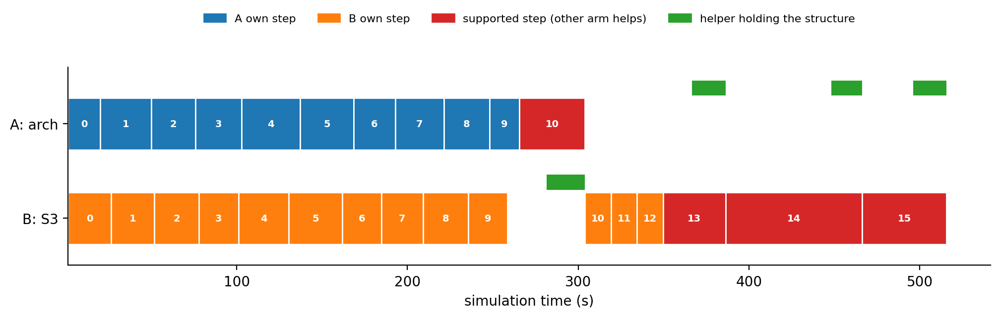
258 s: B waits (A's next step needs help) · 265 s: A asks; B holds the arch for the crown · 350–516 s: A, finished, holds S3 for steps 13–15
When is a brick placed? When is the job done?
| Snap check | limit |
|---|---|
| sideways | 2 mm |
| height | 1.5 mm |
| rotation / tilt | 5° / 5° |
Pass → welds on, step complete. Fail → run stops. A brick left on the stud tops (1.7 mm high) always fails.
Independent check reads only the saved files: every step mated, every support asked for, held with two-finger force and released in order, both arms really moved together, no bad contacts or breaks. Final run: pass.
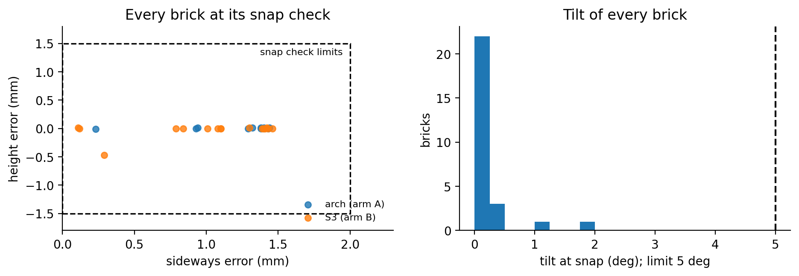
The final run in 30 seconds
The two structures, from their inputs
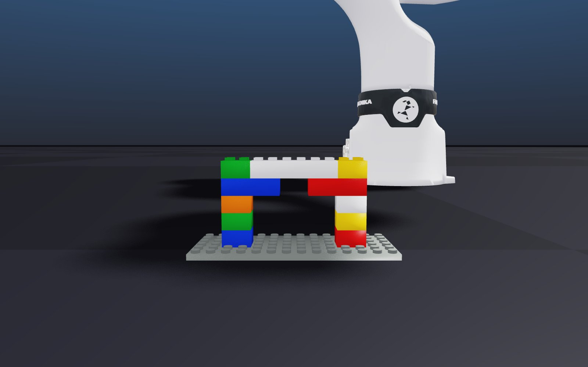
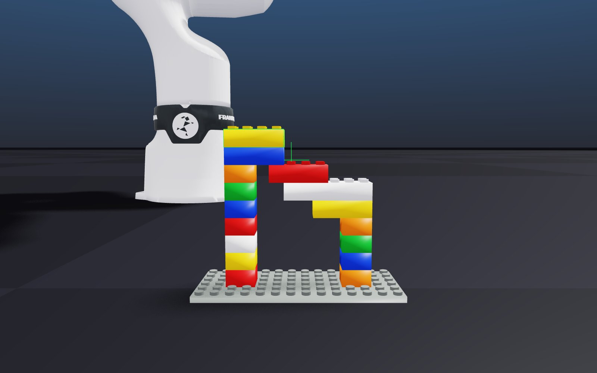
What this does not show yet
- Simulation only — no physical robot.
- Brick position comes from the simulator; a camera-based version exists but was not used.
- Supported steps are judged more gently: brick goes in at 0.85× force, break check paused, small overlaps next to the helper allowed.
- Cautious force model (safety factor 3); for the arch crown it cannot show the support's benefit.
- Drawings cannot show hidden hollows.
- Checks in small steps, backed by the physics contact audit.
Drawing → blueprint → plan → control → two finished structures
Carving from shadows + wall-like tiling · layer-by-layer plan with careful grips and press points · force-balance linear program for supports · cuRobo + straight contact moves + IK · press from above onto resisting studs · five-layer collision safety with space booking · simple coordinator · snap check + independent check.
Questions?